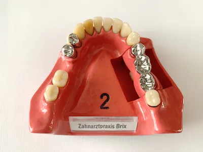
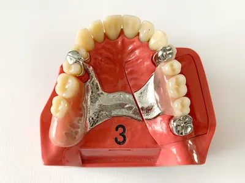
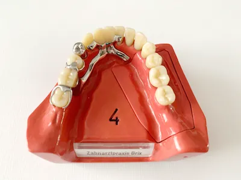
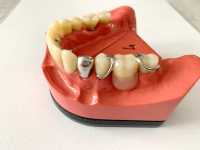
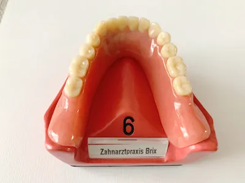
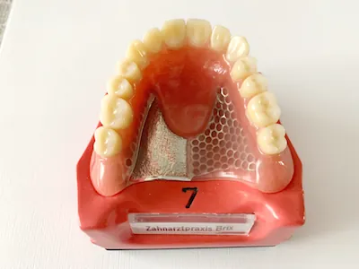

Unsere Leistungen
Zahnmedizin für die ganze Familie – von der Prophylaxe bis zum Zahnersatz.
Gesunde Zähne von Anfang an
Prophylaxe & Prävention
- Professionelle Zahnreinigung mit Ultraschall, Airflow und Bürstenreinigung (für Erwachsene)
- Fissurenversiegelung bei Kindern zum Schutz der Kauflächen
- Aufklärung über Zahnhygiene und Ernährung – besonders wichtig bei Kindern
- Frühzeitiges Erkennen von Zahnfehlstellungen und Kieferproblemen
- Bleaching
Regelmäßige Prophylaxe spart Zeit, Schmerzen und Kosten – für ein strahlendes Lächeln!
Wenn der Zahn erhalten werden kann
Zahnerhaltung Konservierende Zahnheilkunde
- Moderne Füllmaterialien: Komposit (Kunststoff), Keramik, Gold (kein Amalgam mehr)
- Ästhetische Lösungen je nach Wunsch und Zahnsituation
- Individuelle Beratung zur Materialwahl und möglichen Zuzahlungen
Zahnerhalt trotz Entzündung
Wurzelbehandlungen Endodontie
- Wurzelkanalbehandlung bei tiefergehender Karies oder Zahntrauma
- Wurzelspitzenresektion bei komplizierten Entzündungen
Ziel: Den natürlichen Zahn möglichst lange erhalten.
Gesundes Zahnfleisch – stabile Zähne
Parodontologie
- Behandlung von Zahnfleischentzündungen und Parodontitis
- Einsatz moderner Diagnostik (z. B. Keimbestimmung) zur gezielten Therapie
Funktion und Ästhetik bei Zahnverlust
Zahnersatz Prothetik
Feste Lösungen
- Kronen bei stark zerstörten Zähnen
- Brücken zur Versorgung von Zahnlücken
- Implantate als langlebige Alternative zu Brücken und Prothesen
Herausnehmbarer Zahnersatz
Teilprothesen bei mehreren fehlenden Zähnen:
- Modellgussprothesen (Basisversorgung)
- Teleskopprothesen (besserer Halt, langlebiger)
- Kombinationsarbeiten mit Geschiebe oder Riegel (ästhetisch und funktional)
Totalprothesen bei komplett zahnlosem Kiefer (mit oder ohne Implantate für besseren Halt).






Anschauungsmodelle aus unserer Praxis – im Gespräch zeigen wir Ihnen gern, welche Lösung zu Ihnen passt.
Moderner Zahnersatz – fest wie ein eigener Zahn
Implantologie
- Einzelzahnimplantate, Brückenersatz oder Stabilisierung von Prothesen
- Voraussetzung: gutes Knochenangebot und exzellente Mundhygiene
Beratung
Haben Sie Fragen zu unseren Leistungen?
Wir beraten Sie gerne ausführlich.